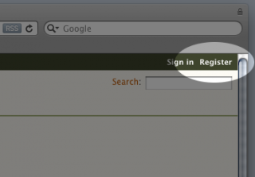

Get started with your software and our project site
The SoundSoftware project provides a software project hosting site for use by UK audio and music researchers. Here's a simple 5-step guide to getting your software on the site and starting to manage it in a more sustainable way.
(This description uses EasyMercurial, the user interface that we publish — but of course, you can use any Mercurial client with our code site.)
Step 1. Register on the code site

Head over to http://code.soundsoftware.ac.uk and follow the Register link at top right.
You'll be asked to enter a little description of the sort of research work you do or are interested in, and to identify the institution you are affiliated with.
After you've submitted the form you'll have to wait a little while for the registration to be processed. Pretty soon you should receive an email telling you it's been dealt with.
While you're waiting...
Step 2. Download and install EasyMercurial
The SoundSoftware code site uses Mercurial, a modern distributed version-control system to manage code repositories.
We provide a friendly user interface for this system, named EasyMercurial.
Download and install it from http://easyhg.org/download.html.
Step 3. Choose a folder of software you want to work with, and open it in EasyMercurial
Choose a piece of software you have written, and set it up as a repository using EasyMercurial.
To do this, just open the software's folder in EasyMercurial, select the files you want to manage (that is, all the source code, but not any temporary files, generated files, or large binary files), and click Add, then Commit. This video shows you how.
Step 4. Create a new project on the code site
The Projects link along the top of the page will take you to a page listing the public projects on the site, and any projects you are a member of. This page also has a link to create a new project, so click that one now.
You have to fill in a few details about your project: try to be informative!
Most of these things can be changed later, if you wish. The only exception is the "identifier", which is the bit of text that will be used to identify your project in URLs and the like: you can't change that one, so choose wisely.
You can choose whether you want your project to be Public or Private. If it's private, then nobody except project members will even be able to see that it exists on the site. You can always change this later, and make a private project public for example.
Step 5. Push your new repository to the code site
When you have set up your project, the site will automatically create a repository for it on the server. (This takes about a minute, so reload the page occasionally until you see the Repository link appear in your project's navigation menu.)
Clicking on that Repository link, as shown in the picture, you can see your empty repository along with a URL to be used when pushing to or pulling from that repository. Copy this URL to the clipboard...
... then, in EasyMercurial with your code repository open, call up the Remote menu's "Set Remote Location..." function and paste in the URL.
This will be the central repository URL with which your local repository will be synchronised when you push your changes or pull someone else's.
Having set up that remote URL, click the Push button on EasyMercurial's main toolbar; you should be asked for your username and password, and your newly added source code will be pushed up to the SoundSoftware server.
And that's it!
Reload the Repository page in your browser to see the changes on the site.
Your code is now in version control, and safely backed up on the server!
When you next change something in your own source code tree, just Commit it using EasyMercurial. Then you can push the changes to the server in order to back them up and share them with other project members.
Now you've set up your project...
Why not add other people you work with as members of your project?
Make sure they have registered with the site as well, then go to the Members link at the top of your project page, search for them by name in the field on the right, and select the role you want them to have. That's normally Manager if you want them to be able to make this sort of administrative change as well, or Developer otherwise.